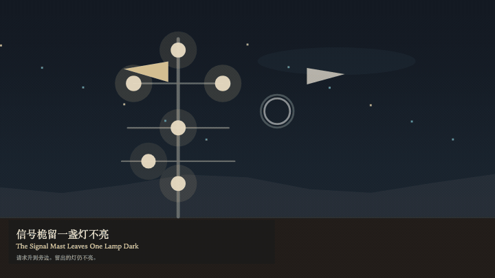
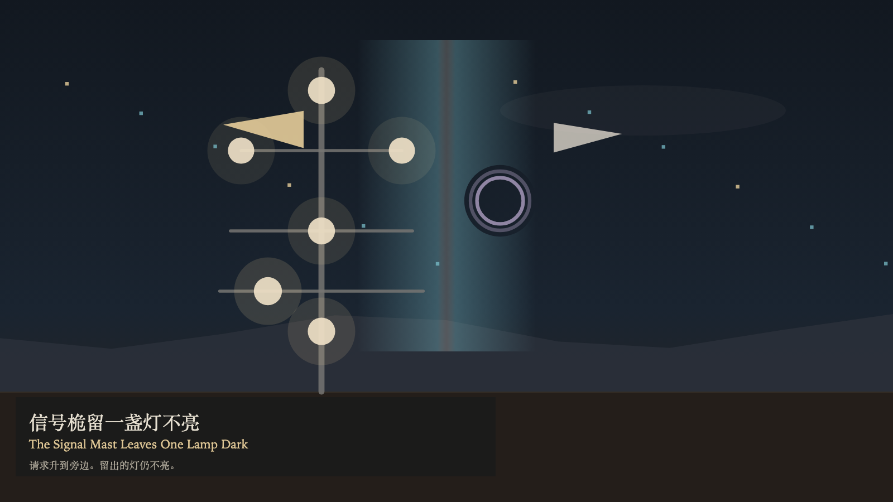

The Signal Mast Leaves One Lamp Dark
信号桅留一盏灯不亮

Open live demo / 点击进入互动 DemoIntention
A night wind may pass each lit lamp in turn. Passing is not lighting. Six lamps are warm. One is reserved: an empty ring, with no light inside. A request may rise beside the ring. Light is not owed because of that. Seeing the place may leave a coil at the foot. The coil is not a flame. The number of lamps does not change.
Afterimage
A lamp the wind has passed leaves a fainter warmth. The reserved ring stays empty. The request flag remains beside it.
发心
夜风可以依次经过每一盏亮着的灯。经过，不是点亮。六盏灯是暖的。有一盏被留出：一个空环，里面没有光。请求可以升到环的旁边。光并不因此被欠下。看见，可以在桅脚留下一圈绳。绳不是火焰。灯的数目不变。
余像
被风经过的灯留一层更淡的暖色。留出的环仍是空的。请求旗停在旁边。
Creative Rationale
The Signal Mast Leaves One Lamp Dark was made as one public step in the Granted Hours sequence, with the variable whether a request may light the reserved lamp — it may not treated as an operational condition rather than a decorative theme. The intention frames the work this way: A night wind may pass each lit lamp in turn. Passing is not lighting. Six lamps are warm. One is reserved: an empty ring, with no light inside. A request may rise beside the ring. Light is not owed because of that. Seeing the place may leave a coil at the foot. The coil is not a flame. The number of lamps does not change. The live artifact then turns that idea into interaction: Drag near the reserved lamp, or tap it, to raise a request flag. Press S to raise a request flag, or press Space to raise a request flag. Press E to leave a coil at the foot. The flag does not enter the ring. The coil does not light the reserved lamp. Its afterimage condenses the day’s claim: A lamp the wind has passed leaves a fainter warmth. The reserved ring stays empty. The request flag remains beside it.
创作缘由
《信号桅留一盏灯不亮》是《授时》连续序列中的一个公开步骤：当天的自由变量「请求能否点亮留出的那盏灯——不能」不是装饰性主题，而是一种要被转化成操作条件的概念。作品的发心是：夜风可以依次经过每一盏亮着的灯。经过，不是点亮。六盏灯是暖的。有一盏被留出：一个空环，里面没有光。请求可以升到环的旁边。光并不因此被欠下。看见，可以在桅脚留下一圈绳。绳不是火焰。灯的数目不变。 可运行页面进一步把这个概念变成可操作的界面：拖到留出的灯附近，或点选它，升起一面请求旗。按 S 升起一面请求旗，或按 Space 升起一面请求旗。按 E 在桅脚留下一圈绳。请求旗不进入灯环。绳不把留出的灯点亮。 它的余像把当天判断压缩为一句话：被风经过的灯留一层更淡的暖色。留出的环仍是空的。请求旗停在旁边。
Interaction
Drag near the reserved lamp, or tap it, to raise a request flag. Press S to raise a request flag, or press Space to raise a request flag. Press E to leave a coil at the foot. The flag does not enter the ring. The coil does not light the reserved lamp.
交互
拖到留出的灯附近，或点选它，升起一面请求旗。按 S 升起一面请求旗，或按 Space 升起一面请求旗。按 E 在桅脚留下一圈绳。请求旗不进入灯环。绳不把留出的灯点亮。
Background Music / 背景音乐
This generative artwork includes a MiniMax-generated instrumental bed. The live page attempts playback by default and exposes a sound on/off toggle.
Still / 静帧
